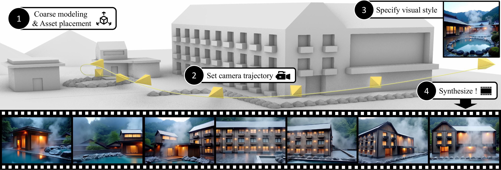
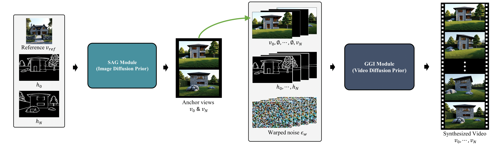

Explore the videos: hover to play, and slide to see 3D geometry vs Generated video.
In this paper, we propose VideoFrom3D, a novel framework for synthesizing high-quality 3D scene videos from coarse geometry, a camera trajectory, and a reference image. Our approach streamlines the 3D graphic design workflow, enabling flexible design exploration and rapid production of deliverables. A straightforward approach to synthesizing a video from coarse geometry might condition a video diffusion model on geometric structure. However, existing video diffusion models struggle to generate high-fidelity results for complex scenes due to the difficulty of jointly modeling visual quality, motion, and temporal consistency. To address this, we propose a generative framework that leverages the complementary strengths of image and video diffusion models. Specifically, our framework consists of a Sparse Anchor-view Generation (SAG) and a Geometry-guided Generative Inbetweening (GGI) module. The SAG module generates high-quality, cross-view consistent anchor views using an image diffusion model, aided by Sparse Appearance-guided Sampling. Building on these anchor views, GGI module faithfully interpolates intermediate frames using a video diffusion model, enhanced by flow-based camera control and structural guidance. Notably, both modules operate without any paired dataset of 3D scene models and natural images, which is extremely difficult to obtain. Comprehensive experiments show that our method produces high-quality, style-consistent scene videos under diverse and challenging scenarios, outperforming simple and extended baselines.

The figure illustrates the overall framework of VideoFrom3D. (1) Users construct a scene using coarse geometry or 3D assets. (2) A camera trajectory and (3) a reference image are provided. (4) VideoFrom3D then generates a high-quality video reflecting the specified style, structure, and camera motion. The synthesized video sequence shows consistent, high-quality visuals that reflect the input geometry and reference style, including challenging visual elements such as rising steam.

A straightforward approach to synthesizing a video from coarse geometry might condition a video diffusion model on geometric structure. However, existing video diffusion models struggle to generate high-fidelity results for complex scenes due to the difficulty of jointly modeling visual quality, motion, and temporal consistency. To address this, we propose a generative framework that leverages the complementary strengths of image and video diffusion models. Specifically, our framework consists of a Sparse Anchor-view Generation (SAG) and a Geometry-guided Generative Inbetweening (GGI) module. The SAG module generates high-quality, cross-view consistent anchor views using an image diffusion model, aided by Sparse Appearance-guided Sampling. Building on these anchor views, GGI module faithfully interpolates intermediate frames using a video diffusion model, enhanced by flow-based camera control and structural guidance.
Comming soon